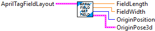
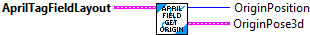
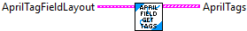
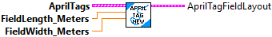
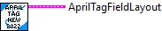
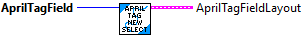
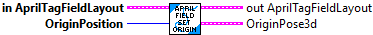
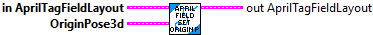

Returns data about an AprilTagFieldLayout.
Inputs:
-- AprilTagFIeldLayout -- AprilTagFieldLayout -- Data cluster
Outputs:
-- FieldLength -- double -- Field length (meters)
-- FieldWidth -- double -- Field width (meters)
-- OrginPosition -- enum -- Location of field origin
-- OrignPose3d -- Pose3 -- Position of the field origin.

Returns data about an AprilTagFieldLayout.
Inputs:
-- AprilTagFIeldLayout -- AprilTagFieldLayout -- Data cluster
Outputs:
-- OrginPosition -- enum -- Location of field origin
-- OrignPose3d -- Pose3 -- Position of the field origin.
Returns the location of a particular AprilTag on the field.
Inputs:
-- AprilTagFIeldLayout -- AprilTagFieldLayout -- Data cluster
-- TagID -- Integer -- The AprilTag to locate.
Outputs:
-- TagPose3d -- Pose3d -- Location of the AprilTag. This is relative to the specifc origin specified in the AprilTagFieldLayout.
-- Found -- Boolean -- TRUE if the TagID was found in the field definition.

Returns an array of all the AprilTags for the provided field layout.
Inputs:
-- AprilTagFIeldLayout -- AprilTagFieldLayout -- Data cluster
Outputs:
-- AprilTags -- Array of AprilTags -- All AprilTags defined for this field.

Construct a new AprilTagFieldLayout from a list of AprilTag data clusters and other field definition data.
Inputs:
-- AprilTags -- Array of AprilTags -- List of AprilTags
-- FieldLength -- double -- Field length (meters)
-- FieldWidth -- double -- Field width (meters)
Outputs:
-- AprilTagFieldLayout -- AprilTagFieldLayout -- Field layout data cluster.

Define the FRC 2022 April Tag field layout.
NOTE -- This function has not been completed.
Inputs:
Outputs:
-- AprilTagFieldLayout -- AprilTagFieldLayout -- Data cluster containing field definition.
Define the FRC 2023 April Tag field layout.
Inputs:
Outputs:
-- AprilTagFieldLayout -- AprilTagFieldLayout -- Data cluster containing field definition.

Define the April Tag field layout based on the input FRC year.
Inputs:
-- AprilTagField -- enum -- Selected Field.
Outputs:
-- AprilTagFieldLayout -- AprilTagFieldLayout -- Data cluster containing field definition.

Sets the origin based on a predefined enumeration of coordinate frame origins. The origins are calculated from the field dimensions.
This transforms the Pose3d objects returned by {@link #getTagPose(int)} to return the correct pose relative to a predefined coordinate frame.
Inputs:
-- in AprilTagFieldLayout -- AprilTagFieldLayout -- Input field data cluster.
-- OriginPosition -- enum -- The predefined origin
Outputs:
-- out AprilTagFieldLayout -- AprilTagFieldLayout -- Modified field data cluster
-- OriginPosition3d -- Pose3d -- Position of the origin.

Sets the origin for tag pose transformation.
This transforms the Pose3d objects returned by getTagPose(int) to return the correct pose relative to the provided origin.
Inputs:
-- In AprilTagFieldLayout -- AprilTagFieldLayout -- Input data cluster
-- OriginPose3d -- Pose3d -- Position of the origin.
Outputs:
-- outAprilTagFieldLayout -- AprilTagFieldLayout -- Modified data cluster.
* @param origin The new origin for tag transformations